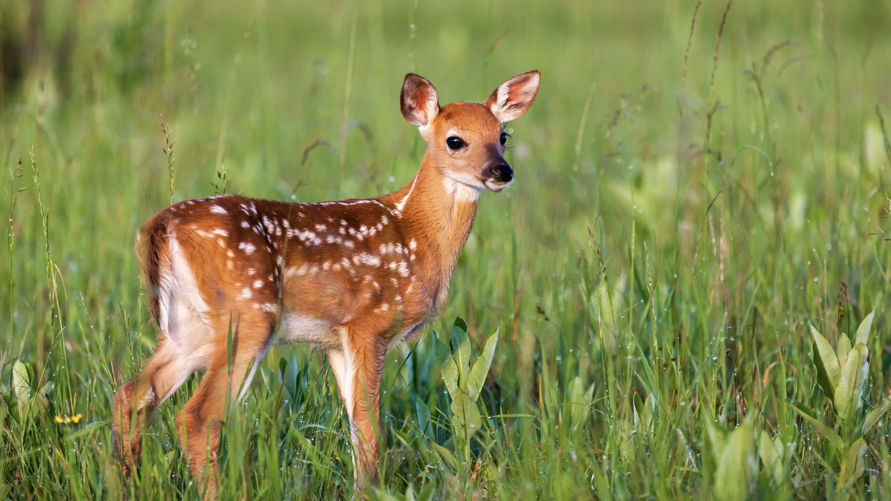

Through the seasons, the diet of these deer change a good bit while their sleaping location stays pretty consistent.
Other than the growth from when the deer were fawns, the main size difference lies between Bucks and Doe.
The White-tail deer population varies state to state, but what remains consistent is that they are the largest U.S. deer population.
Season to season, these deer go through a lot of changes with their fur and antlers.